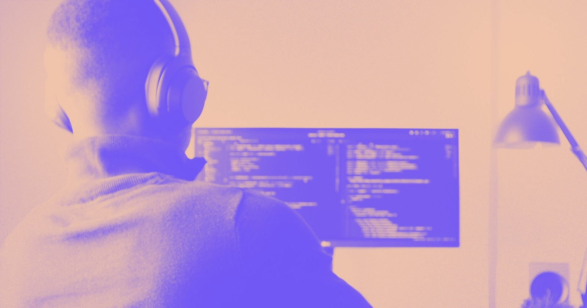

Take a deeper look into what front-end development is, different languages, how to learn front-end development, and much more.

Front-end developers need to design sites that are engaging enough to nudge the target audience toward a conversion.
But what goes into building that experience? Let’s take a look at the developer’s side of the screen
What is front-end development?
You can categorize website development into two areas: front end and back end. The front end is what you see on the screen — menus, graphics, and other features. You’ll also see the front end called client-side because that’s who is interacting with it. Front-end developers are primarily responsible for the site’s appearance.
Back-end developers work behind the scenes on the server-side of a website. They use various programming languages to make things happen, whether it’s going to a thank-you webpage for signing up for a newsletter or adding contact information to a database. Their work focuses on a site’s functionality.
A full-stack developer is a jack of all trades. They can work both ends of web development, with proficiency in a wide range of programming languages. As you may expect, most of the people working with application programming interfaces (APIs) work in this role. All three types of developers work with the user experience but use different programming languages.
Front-end web development languages
A front-end developer uses code that affects how a website looks and how a user interacts with its webpages. That includes simple elements such as buttons that take a visitor to different places within the website, as well as input methods, like a contact form. The programming languages that a front-end developer uses can create a static webpage or a dynamic one. Programming languages they use include:
HTML
CSS
jQuery
JavaScript
How to learn front-end development skills
You’ll find many online courses that teach the essential front-end development skills, such as Webflow University and LearnUX. There’s also no end of cheat sheets and YouTube videos to help you on your journey. Or you can put your education on the fast track by attending a coding boot camp. These programs are typically short and intense but focus on the skills that make you employable.
It’s imperative to become proficient in other related software programs, such as image editing. For example, tools like Figma allow you to create mock-ups of webpages. Building the visual elements before coding can save you hours of work.
If you’re a freelancer, it’s essential to add complementary software knowledge to your skill set. You’ll likely find that your chances of employment are better if you can bring a full slate to the table. Other necessary skills are creativity, interpersonal communication, and adherence to deadlines. That often means you’ll have to hone your troubleshooting skills too.
You may find it helpful to incorporate the typical service-side software skills into your portfolio, such as Python, PHP, Ruby, and Java. Even if you stick with the front end of development, your understanding of these other programming languages can give you valuable insights into creating better websites with improved accessibility.
However, it’s vital to stay current with the industry to continue to develop your skills as technology evolves. Front-end development is unique in that you don’t necessarily need any special credentials to show you are qualified. Your work speaks for itself.